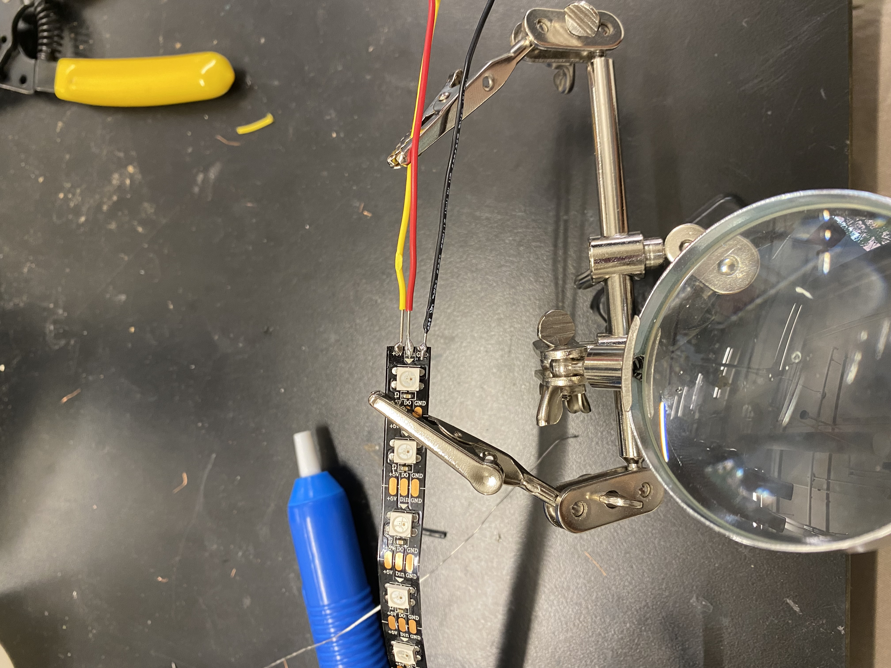
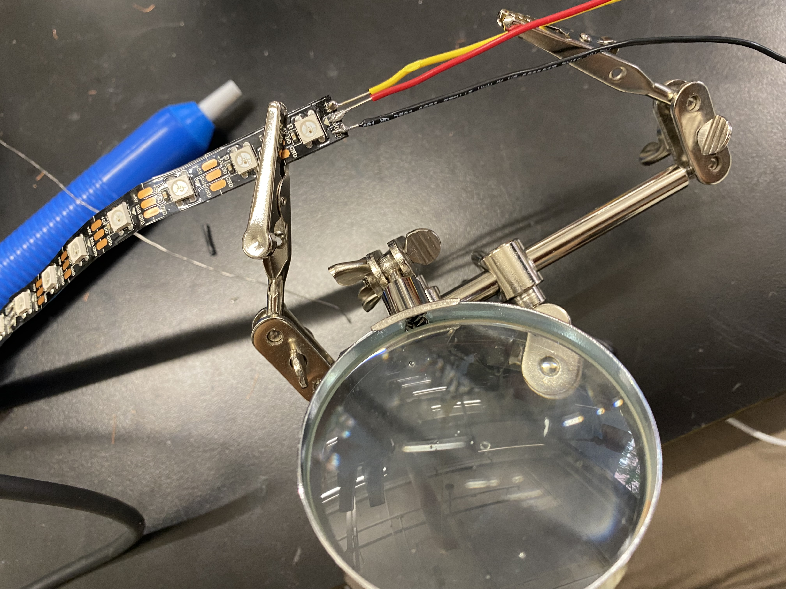
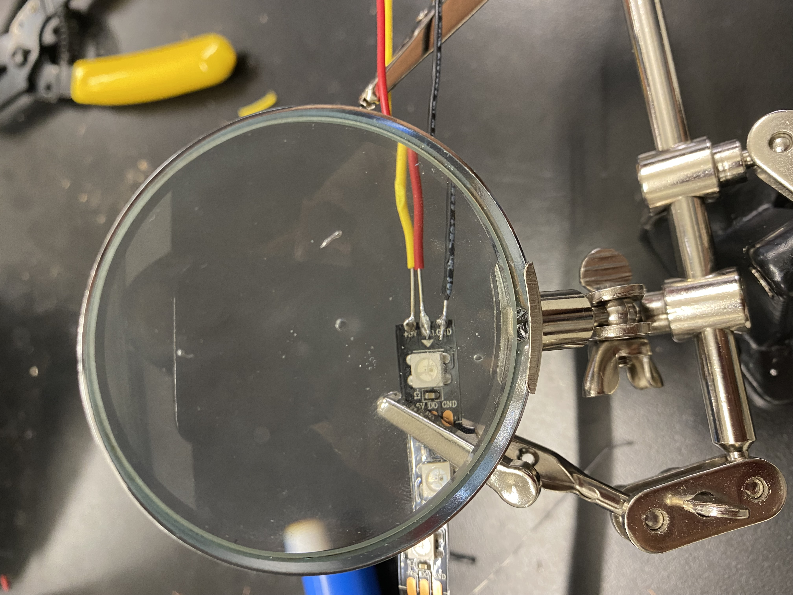
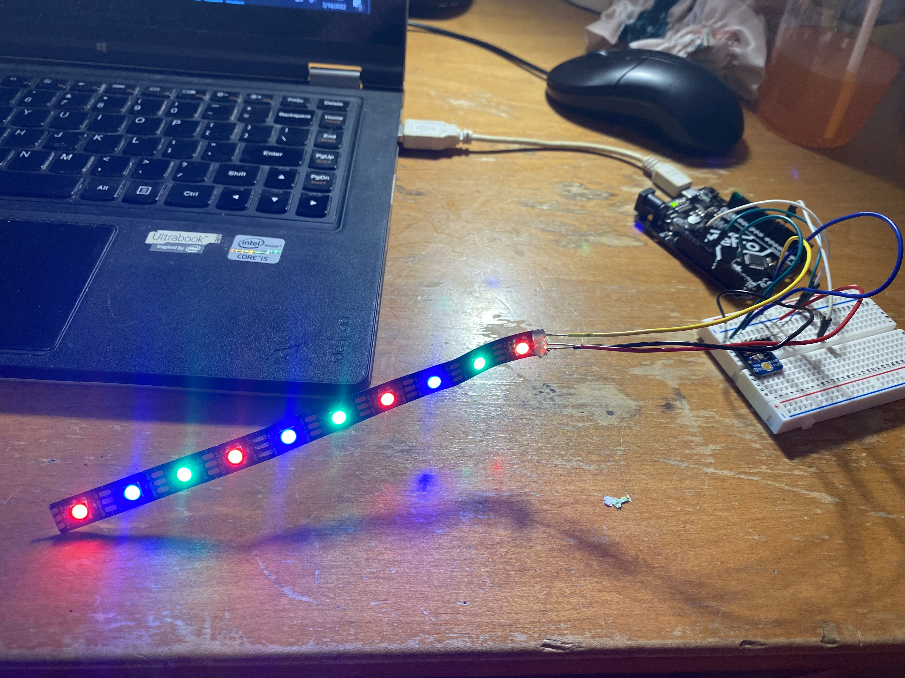
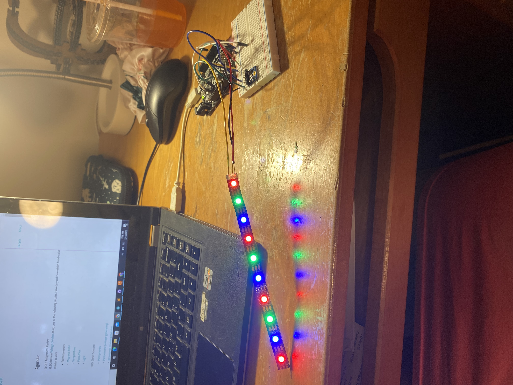

### Week 7
For week 7, our assigment was to use an output device that we haven't used before, so I decided to do LED lights. Starting the assignment was very difficult because my soldering skills were put to the test and I was struggling. I had soldered so much that I had singed the end of the LED lights and had to cut off the tip to start over.



After multiple connection issues, I finally got the LED loghts to work, so now it was time to move on to coding. Coding is my weakness, so the majority of this assignment was spent struggling and researching how to program what I wanted. I got most of my help from the TA Kassia, however, we were both pretty tired of it by the end.
My goal was to connect my output to my input by having a different individual light light up depending on how hard I tapped onto the microphone. So if my result was greater than -25, LED light 4 would light up green, and greater than -40 got you LED light 6 in red.
Here are the pictures of the entire strip lit up, and a video of me tapping the micrphone as each LED light lights up, and the plot graph is shownn behind.

